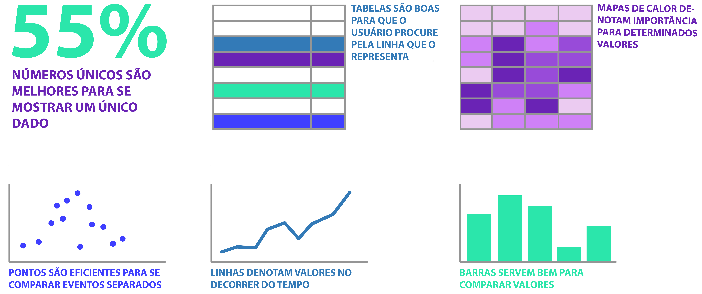

Os gráficos utilizados representam de forma clara e fácil de se ler e entender seus respectivos dados?
Os gráficos utilizados devem representar de forma clara e intuitiva o seu tipo de dado. Na imagem abaixo, tem-se alguns exemplos de tipos de dados e algumas representações fáceis de se ler e entender. (Note que o que as imagens mostram são somente exemplos. Então não é obrigatório o uso de um gráfico de linhas para se ter uma representação de tempo, por exemplo.)

2
Não existem gráficos pizza, rosca ou 3D. (Nota máxima caso não existam)
O olho humano não é bom em comparar tamanhos de áreas em que se tem um ângulo e, por isso, gráficos de pizza e rosca não devem ser utilizados. E, no caso dos gráficos em 3D, há um aumento desnecessário de informação e pode até confundir o usuário na hora de procurar o quanto vale um paralelepípedo, por exemplo.
Portanto, recomenda-se:
· Nota 5 caso não existam gráficos desses tipos no dashboard;
· Nota 4 caso a quantidade desses tipos de gráficos representa uma pequena porcentagem do dashboard;
· Nota 3 caso a quantidade desses tipos de gráficos representa uma média porcentagem do dashboard;
· Nota 2 caso a quantidade desses tipos de gráficos representa uma grande porcentagem do dashboard;
· Nota 1 caso todos os gráficos sejam desses tipos no dashboard.
3
Um eixo X não deve possuir dois eixos Y. (Nota máxima caso nenhum gráfico possui um segundo eixo Y)
Segundos eixos Y para denotar uma escala diferente devem ser evitados. Mas, se necessários, não devem ser colocados em paralelo para evitar confusão na hora da leitura. Na imagem abaixo temos exemplos de como não deve ser feito e de como pode ser feito caso seja realmente necessário.
4
Legendas para todas as informações presentes nos gráficos.
Todas as informações presentes nos gráficos devem possuir legenda para evitar que o usuário fique perdido no visual.
5
Rótulos para cada valor dos gráficos.
Todos os valores dos gráficos devem ser rotulados para que o usuário não precise procurar o eixo e perder tempo fazendo aproximações. (Veja a imagem exemplo da questão 3).
BLOCO DE COR
6
Se uma informação importante é caracterizada por uma cor, recomenda-se utilizar aquela mesma cor sempre que uma informação for da mesma importância. Nesta questão também cabe se cores similares são utilizadas para contextos similares de dados.
Cor é um poderoso elemento para ajudar o usuário a navegar pelo dashboard. Portanto, é importante que hierarquias sejam criadas para guiar o usuário. Veja o exemplo da Questão 17: nota-se uma hierarquia onde a cor azul representa dados relacionados a dinheiro; a cor vermelha é usada para informações positivas; as cores laranja e cinza são usadas para informações negativas. Com isso, quando o usuário vir uma cor vermelha relacionada ao dashboard em questão, ela fará a associação de que é uma informação positiva, por exemplo.
7
Verde e vermelho não devem ser usados juntos. (Nota máxima se não houver nenhuma combinação de verde com vermelho)
8% da população é daltônica de verde e vermelho. Portanto, essas cores NÃO devem ser usadas em conjunto.
8
Quanto menor a clarez do dashboard devido ao excesso de cores diferentes, menor a nota desta questão.
Cores são importantes na criação de um bom dashboard, mas, se usadas em demasia, podem piorar a visualização e deixá-la confusa. Para auxiliar nesta questão, temos recomendações de notas:
· Nota 5 se são usadas até 4 cores diferentes (não adicionando à conta gradientes de uma mesma cor);
· Nota 4 se são usadas 5 cores diferentes (não adicionando à conta gradientes de uma mesma cor);
· Nota 3 se são usadas 6 cores diferentes (não adicionando à conta gradientes de uma mesma cor);
· Nota 2 se são usadas 7 cores diferentes (não adicionando à conta gradientes de uma mesma cor);
· Nota 1 se são usadas 8 ou mais cores diferentes (não adicionando à conta gradientes de uma mesma cor).
BLOCO DE LEGIBILIDADE E TEXTO
9
Os textos possuem fontes fáceis de se ler?
Os textos presentes no dashboard devem usar fontes fáceis e claras de se ler.
10
As fontes possuem tamanhos facilmente legíveis?
Os tamanhos de todas as fontes devem ser suficientes para serem facilmente lidas.
11
As fontes possuem cores com contraste suficiente para que a leitura seja fácil?
Todas as fontes devem possuir uma cor que contraste bem com o fundo, tornando-a clara e nítida.
12
Quanto maior a quantidade de fontes diferentes, menor a nota desta questão. (Recomenda-se nota máxima para até 3 fontes diferentes)
Se várias fontes diferentes são usadas em um mesmo dashboard, a leitura se torna difícil pois o usuário deve acostumar seus olhos para ler novas fontes o tempo todo.
Recomenda-se, então:
· Nota 5 se são usadas até 3 fontes diferentes;
· Nota 4 se são usadas 4 fontes diferentes;
· Nota 3 se são usadas 5 fontes diferentes;
· Nota 2 se são usadas 6 fontes diferentes;
· Nota 1 se são usadas 7 ou mais fontes diferentes.
BLOCO DE ORGANIZAÇÃO E ATENÇÃO
13
Os Princípios de Gestalt são usados para demonstrar que dois ou mais elementos fazem parte de um mesmo grupo quando colocados em meio a outros elementos. São eles: 1. Proximidade (elementos próximos são percebidos como percententes a um mesmo grupo); 2. Similaridade (elementos similares são percebidos como percententes a um mesmo grupo); 3. Invólucro (elementos dentro de um invólucro são percebidos como percententes a um mesmo grupo); 4. Fechamento (elementos dispostos de forma que uma pessoa é capaz de completar a forma sem precisar de alguns elementos faltantes); 5. Continuidade (elementos que formam alguma continuidade são percebidos como pertencentes a um mesmo grupo); 6. Conexão (elementos conectados são percebidos como pertencentes a um mesmo grupo).
Os Princípios de Gestalt são usados para demonstrar que elementos fazem parte de um mesmo grupo quando colocados em meio a outros elementos. Os princípios são:
·Proximidade (elementos próximos são percebidos como pertencentes a um mesmo grupo);
·Similaridade (elementos similares são percebidos como pertencentes a um mesmo grupo);
·Invólucro (elementos dentro de um invólucro são percebidos como pertencentes a um mesmo grupo);
·Fechamento (elementos dispostos de forma que uma pessoa é capaz de completar a imagem sem precisar de alguns elementos faltantes);
·Continuidade (elementos que formam alguma continuidade são percebidos como pertencentes a um mesmo grupo);
·Conexão (elementos conectados são percebidos como pertencentes a um mesmo grupo).
Vale ressaltar que não é necessário que todos estes princípios sejam usados simultaneamente.
Veja no exemplo da Questão 17 como alguns princípios são aproveitados:
·Proximidade: no quadro “RANKING DE ASSOCIAÇÕES”, perceba como a legenda fica mais próxima do elemento que ela representa. “5 maiores” fica mais próximo do gráfico que mostra os cinco maiores e o mesmo acontece com “5 menores”.
·Similaridade: perceba que cada legenda é da mesma cor da informação que representa.
·Invólucro: todos os quadros são envolvidos por uma linha fina para demonstrar que cada quadro representa uma informação diferente.
·Conexão: no quadro “OCORRÊNCIAS”, veja como os pontos são conectados, demonstrando que cada ponto é um elemento de um mesmo grupo.
14
Preattentive Attributes (ou atributos de atenção) são atributos para chamar atenção, como tamanho, fonte, negrito, itálico, cor, sublinhado. Eles devem ser usados com o intuito de chamar a atenção para aqueles dados de maior relevância; e não devem ser usados para chamar a atenção para valores de menor relevância para evitar confusões.
Preattentive Attributes (ou atributos de atenção) são atributos para chamar atenção, como tamanho, fonte, negrito, itálico, cor, sublinhado. Eles devem ser usados com o intuito de chamar a atenção para aqueles dados de maior relevância; e NÃO devem ser usados para chamar a atenção para valores de menor relevância, para evitar confusões.
15
Informações mais importantes devem estar em cima e na esquerda, para serem visualizadas primeiro.
A grande maioria das pessoas leem em uma ordem específica: da esquerda para a direita e de cima para baixo. Portanto, quanto mais relevante é uma informação, mais para cima e para esquerda ela deve estar. A isso dá-se o nome de hierarquia de posição.
16
Informações maiores denotam maior importância.
Informações de tamanho maior passam a impressão de serem mais importantes. Portanto, uma hierarquia pode e deve ser criada para guiar os olhos do usuário. Sendo assim, informações mais importantes tomam maior espaço, enquanto informações de menor importância podem ser representadas em tamanhos normais.
17
Quão pequena é a quantidade de conteúdo que não passa nenhuma informação na tela? (Nota máxima se todo conteúdo passa informação)
Para que um visual seja eficiente, todos os elementos presentes devem passar informação útil. Veja na imagem abaixo uma comparação do mesmo dashboard, o primeiro com vários elementos que não passam nenhum tipo de informação útil para o contexto, o segundo com todos esses elementos retirados.
18
Elementos de storytelling são informações escritas que explicam o contexto dos dados.
Elementos de storytelling são informações escritas que explicam o contexto dos dados. Veja no exemplo da Questão 17 o quadro de “ASSOCIAÇÕES”: as frases “associações nos últimos 3 meses” e “associações canceladas nos últimos 3 meses” são exemplos de elementos de storytelling.
Elementos de storytelling ainda podem ir adiante. Por exemplo: “associações canceladas nos últimos 3 meses” poderia explicar ainda mais sobre a situação, como “associações canceladas após a implementação da funcionalidade Y, há 3 meses”.
19
Como textos e gráficos alinhados à esquerda ou direita, por exemplo.
Elementos não alinhados passam a impressão de desorganização. Por isso, dá-se preferências por formações alinhadas para dar mais conforto aos olhos do usuário. Veja no exemplo da Questão 17 como as informações sempre formam linhas.